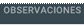
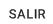

1. Ya en la pantalla "Devolución de Artículos Cliente", se autocompletan los datos del
cliente al que le cargamos la devolución.
2. En la última solapa de , se podrá agregar cualquier tipo de información que
agregue detalles acerca de la devolución del cliente.
3.En la grilla se puede observar un detalle de los artículos que integran a dicha
Devolución. En caso de que alguna de las líneas contenga información incorrecta, el
usuario tiene la posibilidad de editarla seleccionándola y presionando el botón .
De la misma manera podemos eliminar una línea del detalle que no corresponda con el
botón ,como así también, podremos agregar una nueva línea de manera rápida
con el botón .
4.Ya finalizada la revisión de la información de la Devolución, puede , o dicha devolución con los botones correspondientes a cada
acción. En caso de que se cancele la operación, se debe seleccionar el botón .